Selamat ulang tahun Meilinda Puspita Sari sayangnyoo apii !!!
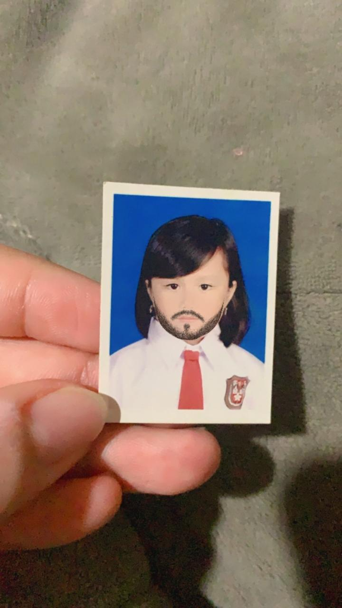
haloo sengg, HEHEHEHEHE kembali lagii bersama api yang membuatkan website untuk melinnn!!!. Maaf yo senggg padahal sebelumnyo la pernah bikin ck ini tapi api malah bikin lagii, api bingung harus kasi apo ke melinn di ultah melinn tahun ini mala kito dk biso ketemuu, wlopun kemarin api suda kasii sendal yg melin mauu dari duluuu tapi apii ngeraso takut ad yg kurangg karna ultah melin tahun ini bener bener sepii, ayukk pegii, adekk pegii, apii gaweee. Melin jangan sedih yoo, semoga kado online yg api bikin ini biso bikin melin bahagiaa yoo cintaaakuuu. oiyaa api bikin ini sedikit bedaaa dari yg waktu itu api bikinn, semoga yang api bikin cukup buat melin seneng di hari ulang tahun melin ini yoo.
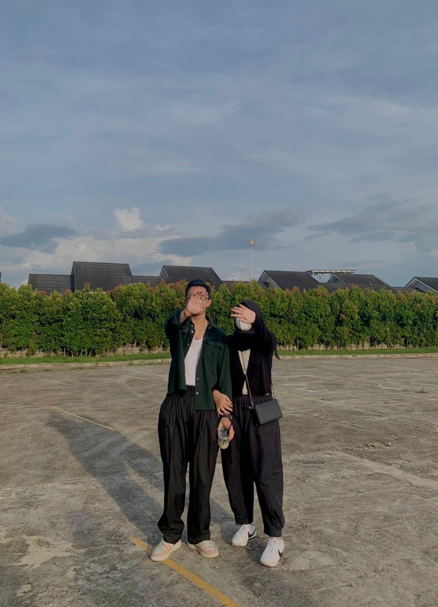
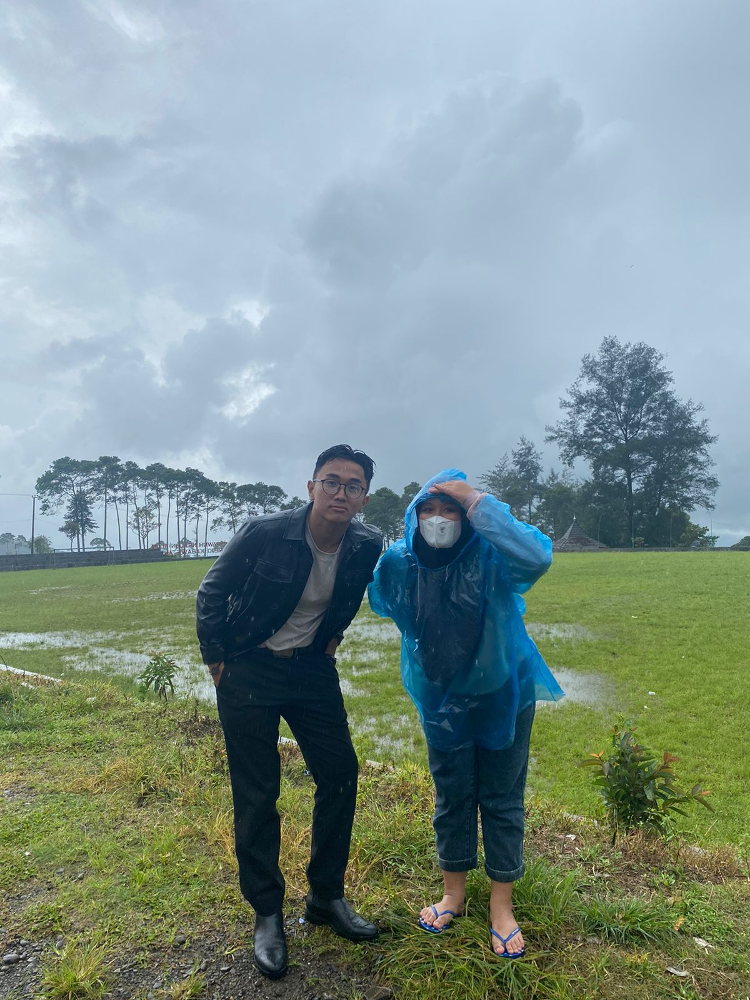
Selamat ulang tahun meilinda puspita sari, selamatt cintakuuu sayangnyoo apii sudah bertambah umur lagii, sudahh melewatii dan menambah 1 tahun lagi di hidup melin, dan selamat dirayakan lagi samo apiii dan yang lainn walaupun dak biso langsung kaya tahun sebelumnyaa. Gimana sengg, ketemu long text api lagi ? sudah satu tahun long text kemarin abiss dan melin dapet long text ulang tahunn lagii dari apii. Apii senengg sedihh campurr karnoo api seneng melin biso bertahan 1 tahun lagi di idup melin, tapi api jg sedih dk biso samo melin di hari ulang tahun melin, tapiii melinn udaa adaa myfeett yaahhhhh kado offline melinn suddaa adaa sekarang inii kado online buat melinnn, inshaAllah kalo ad rejekii impian satu lagi yang bikin bimbang myfeet kemarin kita wujudin yaa!!.
Melinn, makasi ya uda tetep ada di dunia, walopun api tau makin kesini hidup melin makin banyak goncangannyaa, kehilangannyaa, dan kesedihannyaa, semogaa hal itu semuaa tergantikan di masa depann nantii yoo sengg. Apii ngetik inii tiba tiba ke flashback gimana awal kita kenall, dari yang api cuekk nian smo melinnn, teruss berubah jadi api yang suka sm melinn, teruss berlanjut kita berdua yang jalin hubungan huhuuu. Api seneng nian biso dapet melin di hidup api, idup samo melin banyak hal hal baru dan pandangan baru yang api dapett dan semoga melin jugo ngerasoin hal yang samo yo sengg. Kalo gada melin apa ya yang bakal terjadi di hidup api? kayanya ga seru dehhh idup api dan pastinya api ansos dan nolep karena melin bawa senyum terus ke api, makanyaa idupp api lebih berwarnaa, begitu jugaa sm yg lainnn teman teman melinn, sahabat melinn, keluarga melinn. Makanyaa jangan sedih terus yaa sayangg, jangan disimpen sendirian, bilang sm api, pacar melin yang bawel dan ngeselin iniii. Harapan dan doa untuk melin kayanya terlalu banyakk dehhh karenaa api ingin melinn dapett banyakkk bahagiaa dan terwujudnya mimpi mimpii melinnn, ntah itu rejekii melinn, dipermudahnya hidup melinn, bahagianyaa hidup melinn, dan kecerdasan yang diberikan untuk melinn. Ga terasaa yaa sekarang melinnyo apii la besakkk, tapi bagi apii melin yo melin, anak kecil yang selalu pgn api gangguinnn teruss smpee marah marahhh hehee.
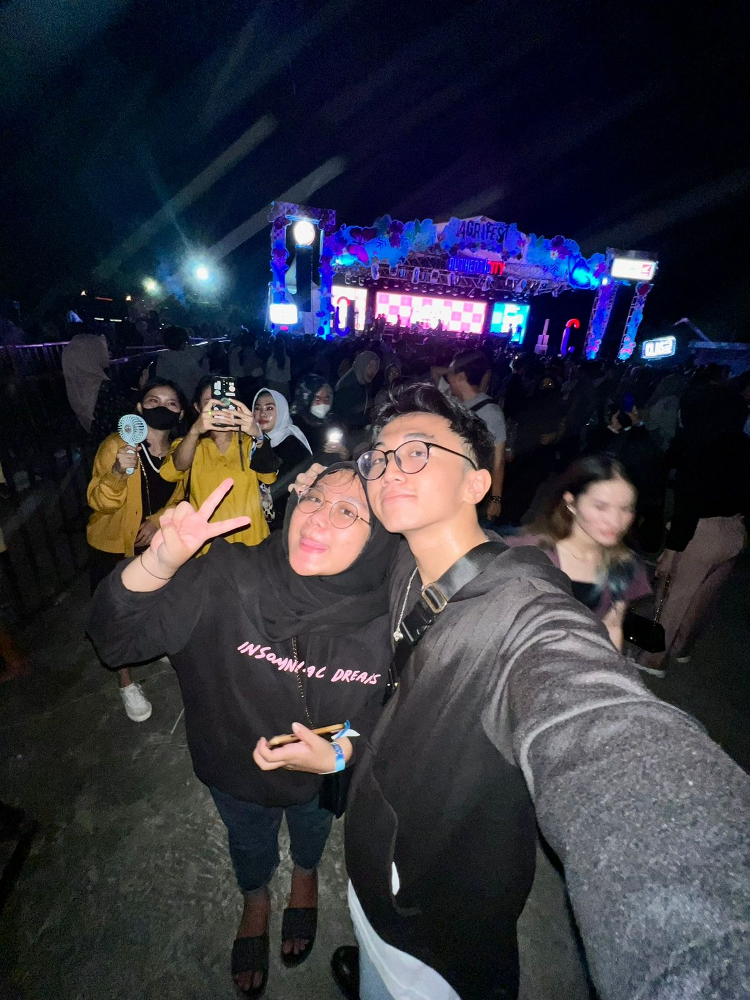
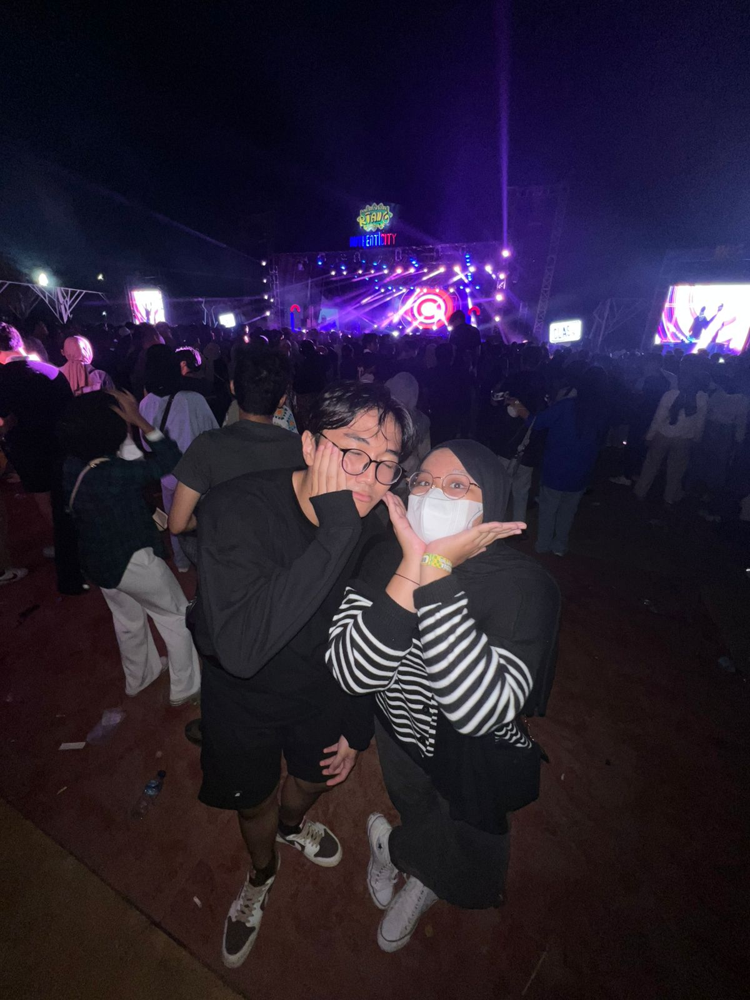
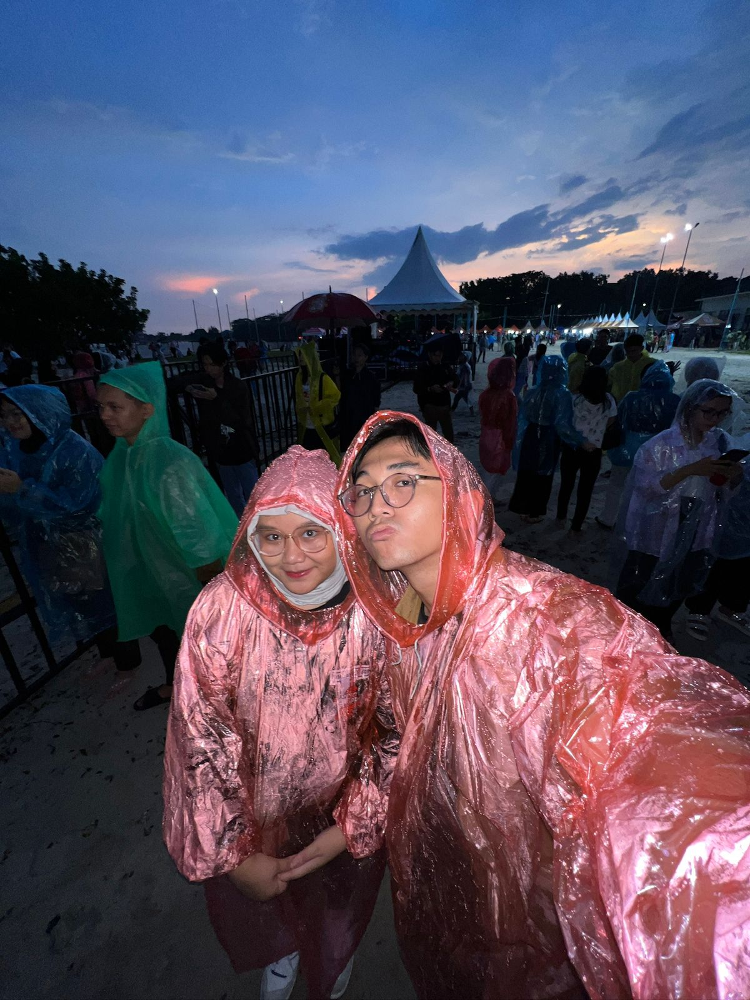
Umur melin yang sekarang uda banyak lewatin hal hal yang berat lohh sengg, hal berat yang api tau dan mungkin api dan banyak orang gatau. 4 tahun ulang tahun yang samo api ini, api bisa jadi saksi hal hal berat yang udah melin lewatin, dan itu beneran berat banget banget bangett, makanya api mau bilang ama melinn api bangga sama melinn, im proud of you sengg, melin harus bisa bangga dan bersyukur uda bisa lewatin itu semuaa dan kaya yang api bilang itu semua ga gampangg. Melin ingett gaa gimana proses di UMP terus pindah ke Unsri, dan ospek unsrii???? api bangga nn sm melin, api tiap inget momen itu ky ga nyangka melin bisa lewatinnyaa, api cuma pgn melin kuatt untuk hal apopun kedepannyo karno hal hal berat itu sudah pernah melin lewatin sebelumnyo. Makasi melin suda bertahan sejauh ini, makasii atas segala hal yang sudah melin kasih ke apii, dan makasihh jugaa untuk diri melinnn yang selaluu kuattt. SENGGG api tau melin bakal makin ovt di umur melin sekarangg tapii percayalahh yang melin takutin bisa melin lewatin, melin ado api seng, samo api yoo, maaf kalo api nyakitin dan minta maaf terus ke melin. Api mau liat melin senyum lagiii, jangan sedihh lagii yaa, jangan mikirin hal yang diluar kendali melinn yo sayanggg, melin ada apii, ada teman teman melinn, ada keluarga melin.
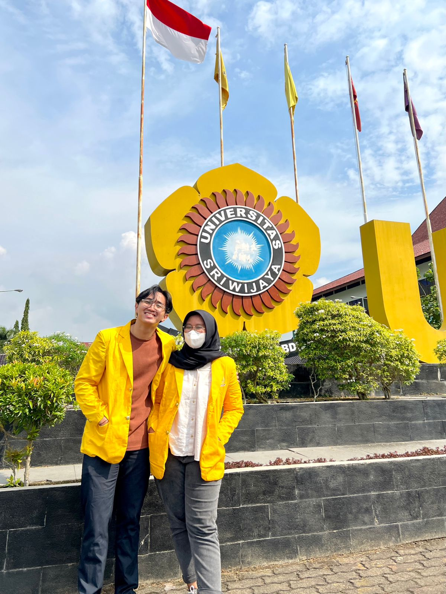
Kayanya tanpa basa basi lagii, apii mauu ucapinn lagii dehh selamat ulang tahunnn. Selamat datang senggg di umur 22 inii, nanti certain yaa gimana rasanyaa "tua", selamat bertambah umurr yaa cintakuuu, semoga di umur 22 iniii kita masi sama samaa yaaa, HARUSS SAMA SAMA, di umur iniii apii harapp menjadi titik balikk melinnn untuk dibukakan pintuu rejekiiii, dewasaa, dann kecerdasannyaaa, melinn dahh gedee tapii di mata apii melinn adalah meyinnn gadis mungil yang strong. Apapun yang terjadi di umur 22 ini api harap melin jangan nyerah ya, jangan pernah rendahin diri melin, jangan pernah jatuhin diri sendiri ataupun sakitin diri melinn. apii cuma pgn melin tauu melin tu berharga di hidup api, melin berharga di hidup semua orang, jadi jangan pernah nganggep kalo melin itu sendirian yaa senggg, melinn ada apiii, ada adinn, aldoo, dewaa, jepunn, dan sekarang uda adaa apiss jugaaa. Teruss kalo di kampuss melinn ada amikkk, malikaa, salmaa, nailaa dan anggota geng melin yang lainn. Makasii yaa sengg uda tetep idupp, please hargain dan nikmatin hidup melin, jangan pernah nyerah sama hidup melinn, kalo pun melin dktau alasan melin hidup, please teteplah hidup demi api.
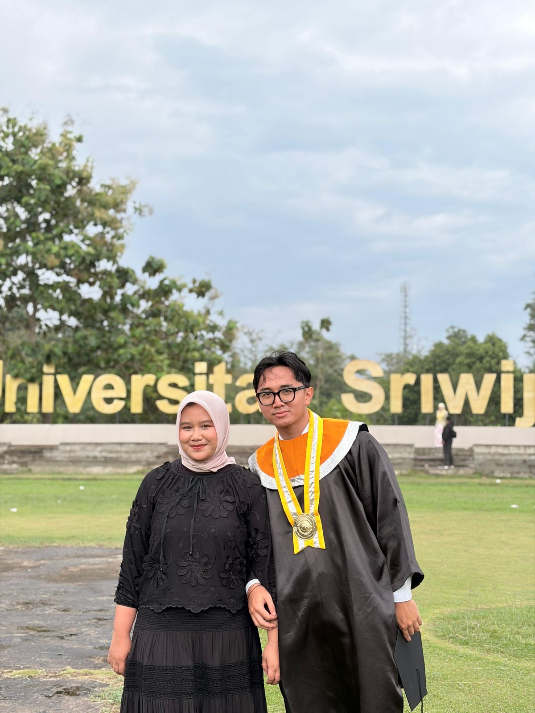
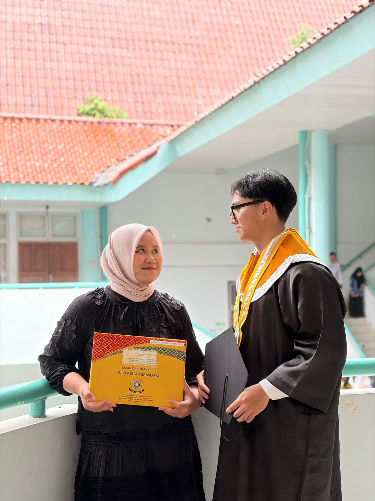
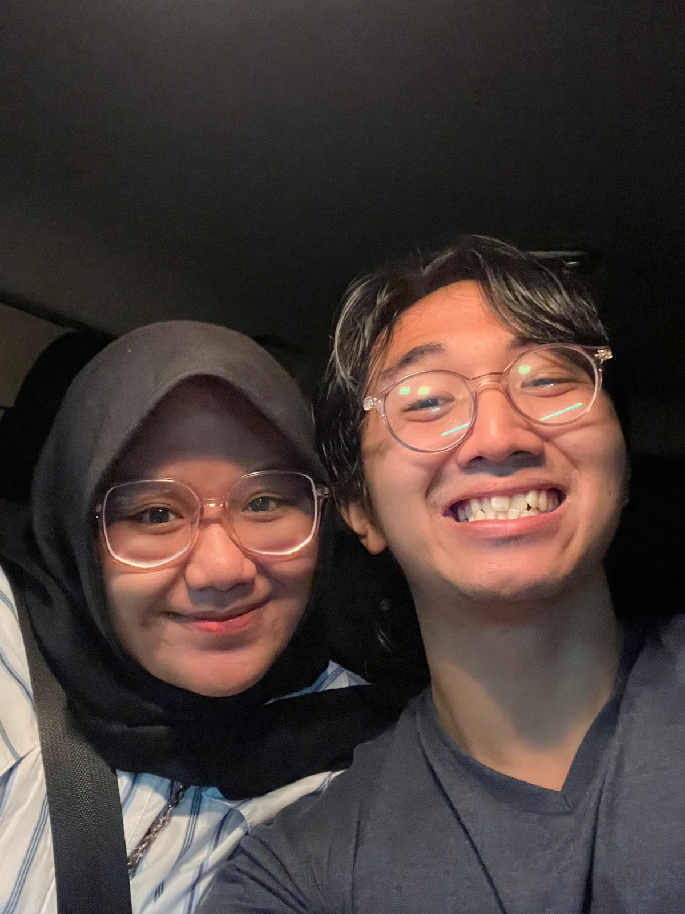
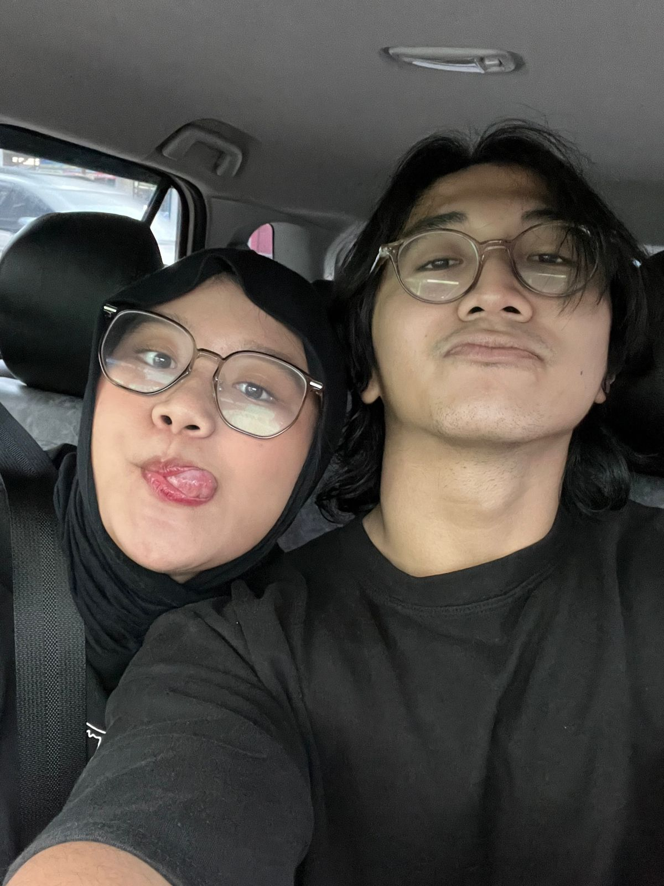
tonton video inii yaa buatt kadooo ulang tahunn online satu lagii!